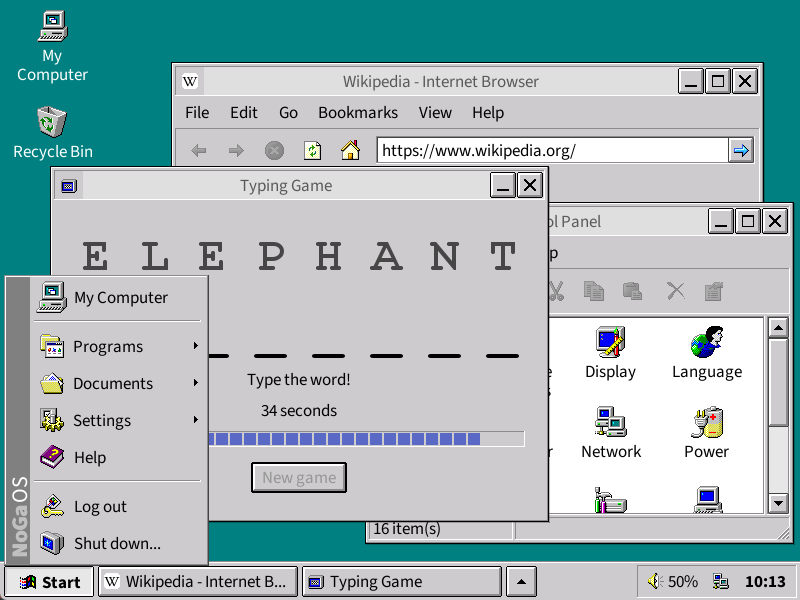

"If you wish to make an apple pie from scratch, you must first invent the universe." — Carl Sagan
For a child to open a simple app and draw, there must first be a desktop, and everything around it that makes it safe and whole. NoGaOS is that universe, built so the pie is the easy part.
NoGaOS is a virtual operating system for kids: a complete desktop with its own windows, files and apps. It helps kids learn real computer basics in a controlled space: mouse, keyboard, windows, files, and simple educational/play apps. It is intentionally not a real operating system: the host does the low-level work, so all the effort goes into what a kid actually sees and touches. And it is a gateway rather than a destination: a kid outgrows it in a few years and moves on to Windows, macOS or Linux, so NoGaOS keeps to the habits those desktops share, made bigger, fewer and plainer, instead of inventing its own.
57 MB · released 7 November 2026 · needs Java 17+ Linux, Windows, macOS and Raspberry Pi

Running it
Install Java 17 or newer, then run the downloaded file:
java -jar nogaos-243.jar
The first start asks you to create an account. Video and audio playback need VLC installed on the computer; nothing else does.
A computer of their own
An old laptop or a Raspberry Pi can become a NoGaOS computer: it powers on straight into NoGaOS, with no login prompt and no Linux desktop reachable behind it. Install Debian (the small "netinst" image, with no desktop environment selected) or Raspberry Pi OS Lite, log in, and run:
It installs Java and everything else NoGaOS needs, downloads the latest version and sets the computer to start it on boot. It is a plain script you can read first, and running it again is safe.
Status
This is a personal project, written for my own children and shared in case it is useful to anyone else. It is early and it has rough edges. If you try it, bug reports and comments are welcome.
Changelog
Version 243 · 7 November 2026
A computer following a policy that names a NoGaOS release updates to that release and no further: the Updates applet checks against it, says so when the computer is already there or past it, and downloads nothing newer.
Wi-Fi switches off and on, from the Network applet's Wi-Fi tab and from the tray's network panel, and the tray says when it is off.
Managed computers: the settings a policy decides carry a short notice with the policy icon naming the Managed policies applet (the Policy applet renamed), which shows the policy followed rather than who signed it; the Policy Editor opens on the policy too, and saving with an identity other than the signer's asks before writing a new policy.
Internet Browser: when there is no connection the error page is Chromium's dinosaur game, also reachable by typing chrome://dino, and error pages look like NoGaOS windows.
Fixes: buttons end flush with the fields above them in every applet; tab strips keep a margin on both sides; a switch that is off limits looks it; a network folder left idle for a quarter of a minute is no longer dropped and reconnected.
Version 242 · 6 November 2026
Control Panel reshuffled: Usage Statistics and the Audit trail are tabs of the System Monitor, which also gained a Screen freezes tab with the whole stack of each freeze a double-click away and a blue colour on its Timeline for long runs that are the host's or the network's doing; the Personal Web Server is a tab of the Network applet; the Storage applet is gone, the C: drive's Properties being the same sheet; the UI Gallery is on tabs; and the Fleet applet is now Policy, under a server certificate icon, without its Computers tab.
The Network applet's Neighbours tab asks every NoGaOS computer on the network who is logged in, which version it runs and which policy it follows, with the rest in the computer's properties; computers no longer write reports beside a policy file. The policy this computer follows carries a mark on its file icon, and a policy or identity file opens from Explorer only, the applet's Open buttons being gone.
Fixes: the App Manager opens again (it crashed since 239); a computer no longer boots to a bare screen when a clipboard read raced the login screen; a window opened alone lands in the centre; the browser's picture menu opens a picture in a new tab and copies its address; the web server's home page is plain; checking an identity's password answers with a tick or a cross.
Version 241 · 6 November 2026
Managed computers: a policy is now signed with an identity, a file of its own made from the Fleet applet with a password and a few seconds of moving the mouse, kept wherever its owner wants and never on the computer; a double-click on it shows its fingerprint and checks the password. The Policy Editor opens for reading, with a History tab of every revision and what changed, and edits only after Edit; every policy carries that history inside, signed, so a computer refuses a rewritten one. Policies and identities from version 239 must be made again.
Desktop: Alt+Tab switches between windows; a window opened on its own lands in the centre again; the Control Panel opens wide enough for its icons; a long message in a dialog wraps instead of stretching it; the screen saver no longer flashes before a laptop sleeps when both are set to the same time.
Personal Web Server: the folder to show is remembered per user and starts as a www folder with a home page, made at the first Start, with a button that opens it in the explorer; the share scanner of the Networks applet lists this computer too when it shares files.
Version 239 · 6 November 2026
Network folders can be written: files are saved, copied, renamed, moved and deleted on the shared folder from any app or the explorer, with no Recycle Bin there, and each change is in the audit trail; an administrator can also choose which users see each folder.
A Google Drive folder can be added as a network folder from the Networks applet, signing in with a Google account through the grown-up's own OAuth client; the whole Drive, one of its folders or a folder shared with the account shows in My Computer as a network drive, crossed out while the computer is offline.
New Personal Web Server applet in the Control Panel: an administrator picks a folder and starts it, and every computer on the network reads the folder's pages and files in a browser at this computer's address, with a tray icon while it runs; it stops at logout and never starts by itself.
Version 238 · 5 November 2026
NoGaOS Cloud is gone: the computer no longer connects to a provider, so there are no cloud networks, shared files, cloud mail or backups to a provider any more, and mail goes only between the users of this computer. The Control Panel's Cloud applet now explains what it was and why it was removed; a computer that was enrolled forgets it on its first start, and the snapshot size limit that lived in the applet is set in the backup settings file (see the Snapshots help topic).
Version 237 · 5 November 2026
Network folders: an administrator adds a Windows shared folder from the Networks applet, with a wizard that finds the computers nearby and what they share; it shows read-only in Local Network on every login, is found again when its computer changes address, and the explorer says "Connecting…" instead of freezing while it is reached.
Media Player plays a film from a network folder or a USB drive where it is, without copying it first.
Local Network lists only the computers that are online now; the greyed-out ones met before are gone.
Version 235 · 4 November 2026
Internet Browser: sites that scroll inside a page area instead of the whole page show one scrollbar, and it scrolls them.
Version 234 · 4 November 2026
Energy: a laptop whose battery firmware gives no numbers at all says its level is unknown, instead of showing a fixed 15% that never moved while it charged.